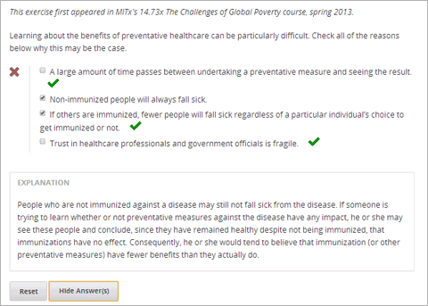

在复选框问题中, 学习者从可能的答案列表中的选择一个或多个选项.为了正确回答问题,学习者必须选择所有正确的选项. 每个复选框问题必须有一个或多个正确选项.
对于在你课程中的复选框问题,你可以使用edX Insights评估学习者成绩数据和检查提交过的答案. 更多相关信息,请查看： Using edX Insights.
你可以使用简单编辑器或高级编辑器创建复选框问题.你可以在简单编辑器中设置一个问题，然后切换到高级编辑器来添加更多的XML中的配置选项.然而,你不能从高级编辑器切换回简单编辑器。因此,你可能会想要尽可能完全地确定问题的格式在你开始使用先进的编辑器之前。
要使用 简单编辑器 创建一个复选框问题, 有以下的步骤.
>>问题<<).这个问题文本是这个问题的访问标记。解释] 出现解释文本的前面和后面。以下文本对于上面的示解释。
为什么学习预防保健的好处十分困难. >>请选择以下所有正确的原因.<<
[x] 从进行预防措施到看到结果需要大量的时间.
[ ] 未免疫的人特别容易生病.
[x] 如果其他人都获得免疫, 将会有更少的人生病无论某个人是否选择接种疫苗.
[x] 医疗专家与政府官员之间的信任十分脆弱.
使用 :ref:`高级编辑器<编辑器>`编辑一个复选框问题,有以下步骤.
<problem>
<p>为什么学习预防保健的好处十分困难请选择以下所有正确的原因.</p>
<choiceresponse>
<checkboxgroup label="请选择以下所有正确的原因.">
<choice correct="true"><text>从进行预防措施到看到结果需要大量的时间. </text></choice>
<choice correct="false"><text>未免疫的人特别容易生病. </text></choice>
<choice correct="true"><text>如果其他人都获得免疫, 将会有更少的人生病无论某个人是否选择接种疫苗. </text></choice>
<choice correct="true"><text>医疗专家与政府官员之间的信任十分脆弱. </text></choice>
</checkboxgroup>
</choiceresponse>
<solution>
<div class="detailed-solution">
<p>解释</p>
<p> 没有接种某种疾病疫苗的人可能不会得这种病.如果某人尝试去学习防御措施不管是否对防御疾病有效，他/也许会看到这些 人得出结论，不管是否接种预苗他们都保持健康，所以免疫接种没有效果.因此他/她就会相信接种预苗(或者其他预防措施)效果比实际低.</p>
</div>
</solution>
</problem>
<problem>
<p>Question text</p>
<choiceresponse>
<checkboxgroup label="label text">
<choice correct="false"><text>答案1 (incorrect)</text></choice>
<choice correct="true"><text>答案2(correct)</text></choice>
</checkboxgroup>
</choiceresponse>
<solution>
<div class="detailed-solution">
<p>解释标题</p>
<p>解释文本</p>
</div>
</solution>
</problem>
<choiceresponse> (必要): 学习者选择的这个问题的选项的说明.<checkboxgroup> (必要): 指定这个问题为复选框问题.<choice> (必要): 指定一个答案选项.标记: <choiceresponse>
学习者选择的这个问题的选项的说明.
属性(无)
<checkboxgroup>
标记: <checkboxgroup>
指定这个问题为复选框问题..
属性 .. list-table:
:widths: 20 80 * - 属性 - 描述 * - 标签 (必要) - 指定响应的名称字段.
<choice>
标记: <choice>
指定一个答案选项.
属性
属性 描述 true (至少一个) 指出一个正确答案. 对于复选框问题,一个或多个 <choice>标签可以包含一个正确的答案。false (至少一个) 指出一个错误答案.